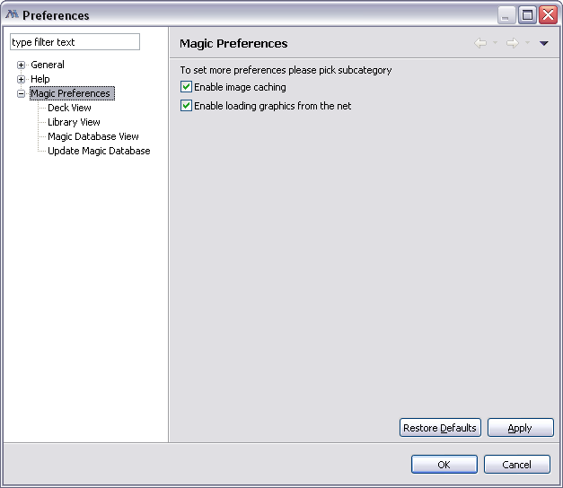

Preferences
Application preferences available from main menu->Window->Preferences.
It contains the following pages:
- General
- Appearance - allow to change colors and font for some part
- Network Connections - allow to set proxy configuration
- Keys - define key shortcuts for commands
- Help - allow to specify which tool to use to display help
- Magic Preferences - Common Preferences
Common Preference Page

This pages control some general aspects of card organiser.
Enable image caching - this checkbox controls either or not to cache images from the net on the local harddrive (they will be stored in workspace).
Enable loading graphics from the net - this controls if card images and set symbols will be loaded from the net. To work offline
or to preserve traffic you may want to disable this.
You won't see art of the cards in this case (unless they were cached previously),
but you will still see card text, type and other parameters in the cards view.
Column Layout Preference Page
This preference allow to change order and visibility of columns in views.
To change order select a column and use Up or Down buttons.
To change visible
check or uncheck the column (it is visible when checked).
You also also do the same from the view itself:
To change order drag and drop columns by their header.
To hide column grab right border of the header and move it until
it meets right border.
To unhide the column do opposite (if column is hiding between two other columns cursor would become double line instead of single line).
See also list of columns.
Update Magic Database
This pages allows to update your local database from gatherer web site.
See Updating Database.